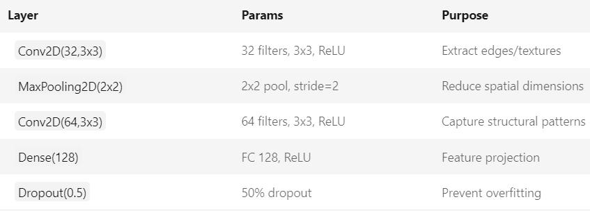
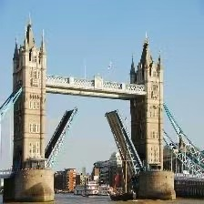
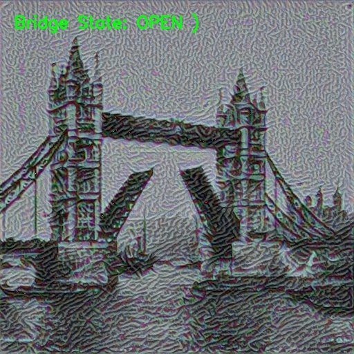

98%
~5s
1.2M
150x
算法处理流水线
多尺度特征提取
通过调整分辨率与卷积层感受野，确保远距离监控下塔桥轮廓的精准捕捉。
轻量化模型优化
针对 NST 算法的高计算量，通过减少迭代次数与知识蒸馏，大幅降低硬件占用。
语义感知风格映射
首创“状态-艺术”映射矩阵，让机械动作与艺术情感产生逻辑关联。

系统架构逻辑图 (CNN-NST Pipeline)
不同工况下的鲁棒性展示
识别状态: OPEN (打开)

稳定工况识别，即使在阴雨天仍能保持高精度分类。
风格映射: Van Gogh

风格反馈：通过梵高的流动笔触表现机械升起时的能量迸发感。